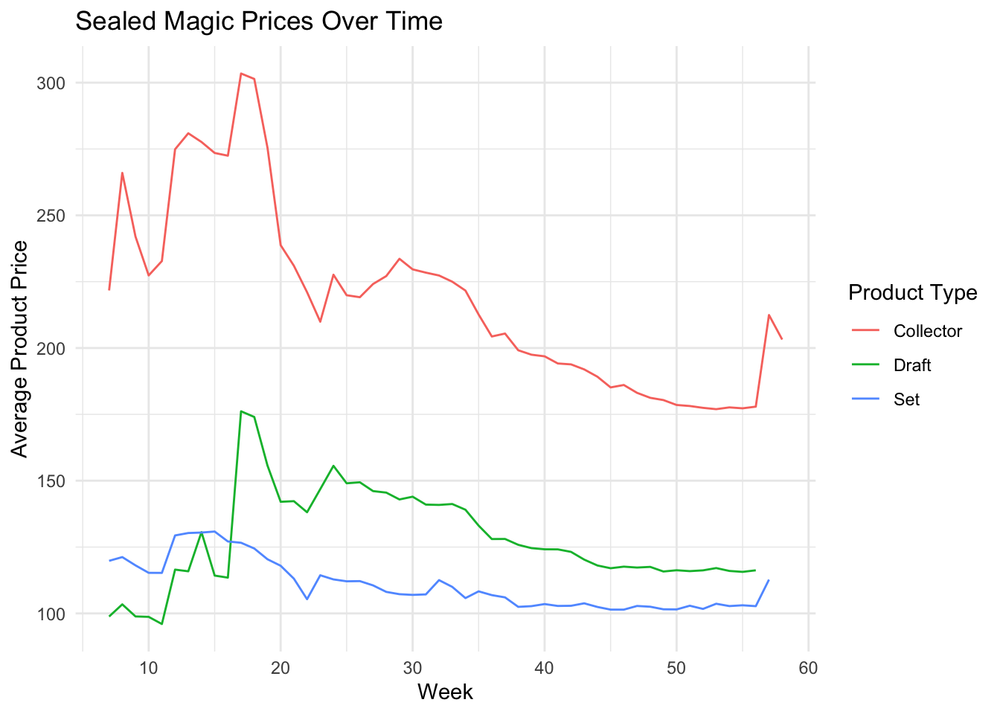

ARMA/ARIMA/SARIMA Models
In the first attempt to model Hasbro’s stock price, we found that using only past prices to forecast future values proved to be difficult. The optimal model only barely outperformed a simple benchmark method. This reality is unsurprising. Hasbro is large corporation in a dynamic trading environment built on imperfect knowledge and imperfect markets. To further improve the model, we consider how additional features may improve the model and its predictive capabilities.
Can Magic the Gathering help predict Hasbro’s stock price?
As described in this project’s introduction, Magic the Gathering is a valuable method for investigating Hasbro’s stock value because it has become an increasingly important part of their portfolio. It recently became Hasbro’s first $1 billion brand. While other subsidiaries report net losses, Wizards of the Coast, producer of Magic the Gathering as well as Dungeons and Dragons, has continued to report strong profits, driving much of Hasbro’s revenue.
Further, the secondary market for Magic the Gathering cards offers a unique way to potentially enhance the model’s predictive capability. Given that Magic is such an important part of Hasbro’s portfolio, it’s possible that Magic card prices could inform the stock’s price movement. For example, in quarters when popular Magic products are sold, those products are likely to maintain a higher price on the secondary market. Then, the resulting profit from these products being sold by Wizards of the Coast into the secondary market would be reported to Hasbro investors, potentially increasing the stock’s value.
This context sets the stage for selecting features and testing the central question - can Magic the Gathering predict Hasbro’s stock price?
Selecting Magic the Gathering Model Features
Given that there are more than 20,000 Magic cards released over the last thirty years, a vast majority of these data points would only introduce noise into the model. Thus, it is more helpful to consider the sealed products in which cards are purchased. See the data visualization page for more details on these products.
When considering these products, it is unlikely that any products outside those currently being produced by Wizards of the Coast would impact Hasbro’s valuation. While print run data for Magic card is not publicly available, there is a general consensus that each standard set of Magic cards is in production for 12-18 months and are generally printed to demand. Exceptions to this rule include limited print run products such as Collector Booster Boxes and Remastered sets, which are only printed once or in a much more constrained quantity in multiple waves of printing.
To estimate how the Magic the Gathering secondary market could inform Hasbro’s stock price, we include the weekly prices for the sealed Magic products from 2021. This subset of products ensures that all were still in production and thus relevant to Hasbro’s financial performance.
Even in working with sealed products, the volume of product releases in 2022 creates dozens of potential features, all of which enter the market at different times. To simplify the secondary market data further into a more equivalent comparison, all of the products are aggregated together by the product type and the average price value is taken for however many products are available to purchase in a given week.

Selecting Other Model Features
We also include Hasbro’s trade volume to capture the amount of activity at a given price point. The data is also transformed from daily prices to average weekly price to match the frequency of the available Magic the Gathering product data. The average is chosen as the aggregation method because while there is volatility present in the stock price, there are not such huge changes on a daily basis as to create outliers that would warp the mean of the week’s adjusted stock prices.
Finally, we include the S&P500 average price to capture the overall market’s trajectory as a potential extraneous explanation to Hasbro’s price. It is worth nothing that while Hasbro is in the S&P500, they are listed as the 487th inclusion by weight, so any potential information leakage is likely to be insignificant when the estimated coefficients for the S&P500’s price will be driven by much larger corporations and market forces.
Finally, we compare our target - Hasbro’s weekly average stock price - with the Magic products and other features that will be added to the model. Because the prices vary in scale, all average prices are logged to decrease the influence of any one variable being due simply to the instrument’s valuation.
ARIMAX Model Fitting
After preparing the multivariate features, we use both the auto.arima function and a manual model selection process to determine the best parameters for modeling and forecasting Hasbro’s stock price.
The results of each model’s implementation and the step by step stages of the model selection process are included below.
Automatic ARIMA Model Selection
| ARMA(1,1) | Estimate | Standard Error |
|---|---|---|
| ar1 | 0.9743 | 0.0276 |
| ma1 | 0.421 | 0.158 |
| collector | -0.077 | 0.094 |
| draft | 0.0603 | 0.0626 |
| set | -.4006 | 0.1546 |
| s&p500 | 0.7981 | 0.0901 |
| volume | -0.0204 | 0.0089 |
The auto-generated model results in a ARMA(1,1) design. The model has an AIC of -191.99 and a BIC of -176.85. From comparing the estimates and standard errors, we can note that the ar1, ma1, set booster, s&p500, and volume variables are statistically significant.
We next implement a manual model selection process starting with a general linear regression and then introducing several ARIMA model options for capturing the residuals of the regression’s fit.
Manual ARIMA Model Selection
| Estimate | Standard Error | T Value | P | |
|---|---|---|---|---|
| (Intercept) | 3.0551 | 2.5889 | 1.180 | 0.2444 |
| Collector | 0.8785 | 0.2162 | 4.063 | 0.0002 *** |
| Set | -0.2374 | 0.3987 | -0.595 | 0.5547 |
| Draft | -0.1426 | 0.1122 | -1.271 | 0.2105 |
| S&P500 | 0.0323 | 0.3217 | 0.101 | 0.9203 |
| Volume | -0.1379 | 0.0322 | -4.276 | 0.0001 *** |
Interestingly, when computing only the linear regression, the Collector Box products and Hasbro trade volume prove to be statistically significant. However, this model does not taking into account the endogenous auto-correlation present in the time series. To address this shortcoming, we model the residuals of the model using an ARIMA model.
Based on the ACF and PACF plot of the linear regression’s residuals, it looks like only a few values are statistically significant, offering a subset of values to consider for implementing the ARIMAX model. From the PACF, 1 is the only statistically significant value, but 2 is nearly above the threshold, so it will be considered as well. In the ACF plot, the first three lags are statistically significant and will be options for the model’s parameters.
Two models stand out from these results. ARIMA(2,0,3) minimizes the AIC with a low BIC, while ARIMA(1,0,0) minimizes the BIC with a low AIC as well. With these two models and the auto-generated ARIMA(1,0,1) model, we continue with model diagnostics and evaluation through cross-validation.
Model Diagnostics
All three models report very similar results, potentially pointing to the difficulty of the modeling task and noise inherent in the financial data we’re working with. A few smaller differences stand out - ARIMA(1,0,0) includes a point where the p-values in the Ljung-Box statistics plot is not above the statistically significant threshold. Only ARIMA(2,0,3) includes an ACF plot without any statistically significant lags, but even this is likely a minimal difference between it and the others.
As such, we are inclined to proceed with all three models for future consideration. Next we will use cross validation to further evaluate the models.
Model Cross Validation
Considering the three models, we observe the most complicated model, ARIMA(2,0,3) has the highest RSME at each prediction point. The other two models have more similar RSME plots, with the auto-generated model, ARIMA(1,0,1) having a slightly higher RSME for the first horizon, but having a more gradual increase than the other model, ARIMA(1,1,0), which has the lowest RMSE for the first three horizons and is only slightly less accurate on the fourth horizon than the auto-generated model.
With these results, along with the previous model diagnostic steps, we proceed with the auto-generated ARIMA(1,0,1) model for forecasting with exogenous variables.
Fitting the Chosen Model
After manually investigating models, we select the ARIMA(1,1) model for its simplicity, optimized AIC and BIC values, and smoother predictive performance over the forecasting horizon explored above.
The coefficients are slightly different from the original auto-arima model’s output due to the inclusion of the intercept in these results. The same variables remain statistically significant, however.
| ARMA(1,1) | Estimate | Standard Error |
|---|---|---|
| ar1 | 0.9678 | 0.0327 |
| ma1 | 0.4623 | 0.1448 |
| intercept | -1.8063 | 1.4555 |
| collector | -0.409 | 0.0970 |
| draft | 0.0614 | 0.0619 |
| set | -0.3768 | 0.1521 |
| s&p500 | 0.9754 | 0.1638 |
| volume | -0.0200 | 0.0086 |
In general, a ARIMAX model with five exogenous variables and an ARMA(1,1) structure would take the form:
\(y_t = \beta_1x_{1t} + \beta_2x_{2t} + \beta_3x_{3t} + \beta_4x_{4t} + \beta_5x_{5t} + \phi_1y_{t-1} - \theta_1z_{t-1} + z_t\)
In this fitted model, this equation would be:
\(y_t = -0.409collector_t + 0.0614draft_t -0.3768set_t + 0.9754sp500_t - 0.02volume_t + 0.9678y_{t-1} - 0.4623z_{t-1} - 1.8063\)
Forecasting Hasbro’s Stock Price
Ultimately, the model’s forecast appears slightly optimistic for Hasbro’s stock with a gradual upward trajectory. The width of the confidence bounds highlight the uncertainty of these predictions in which Hasbro’s price could continue falling to lows not seen in years or could bounce back and recover the lost value from the last fifteen weeks, or anything in between. While these results improve upon the default ARIMA model used in our uni-variate analysis, the model remains limited in its usability.
As another observation from the model, it is interesting to note the statistically significant variables. Within the final ARIMAX model, the coefficient for the logged weekly average price of Set boosters boxes, the logged weekly average price of the S&P500, and the logged average weekly trade volume of Hasbro were all statistically significant Of course, because of the auto-correlated lag variables included in the model, these can not be interpreted as directly as in their OLS counterpart, but their presence is helpful in identifying potential sources of predictive power.
The resulting forecast and significant variables indicate the market’s broad forces and the activity surrounding Hasbro’s stock may be more powerful in forecasting than the secondary market data. This is unsurprising, but it is encouraging to see one variable representing Magic the Gathering as statistically significant as well.
Finally, it’s worth remembering that there are no shortage of other variables within the error term of the model. These missing features likely introduce endogeneity to the model. Examples of these spurious variables include the unknown volume of Magic the Gathering products sold in a given week, other economic indicators such as treasury yields or inflation rates, the sentiment of investors over time, and other related stock prices, such as rival toy company, Mattel.
Conclusion
In this exercise, we have justified the use of Magic the Gathering secondary market data in multivariate analysis for predicting Hasbro’s stock based on it’s importance to Hasbro’s overall revenue and profitability. We evaluated a number of ARIMA models, both auto-generated and manually identified. We conducted model diagnostics and cross-validation to select a best-fit model. We then used this model along with the identified exogenous variables to forecast Hasbro’s future stock prices. The results improved upon simpler processes, but can be further improved. In future steps, we will analyze and model Hasbro’s volatility with ARCH models to better capture the stock’s performance.